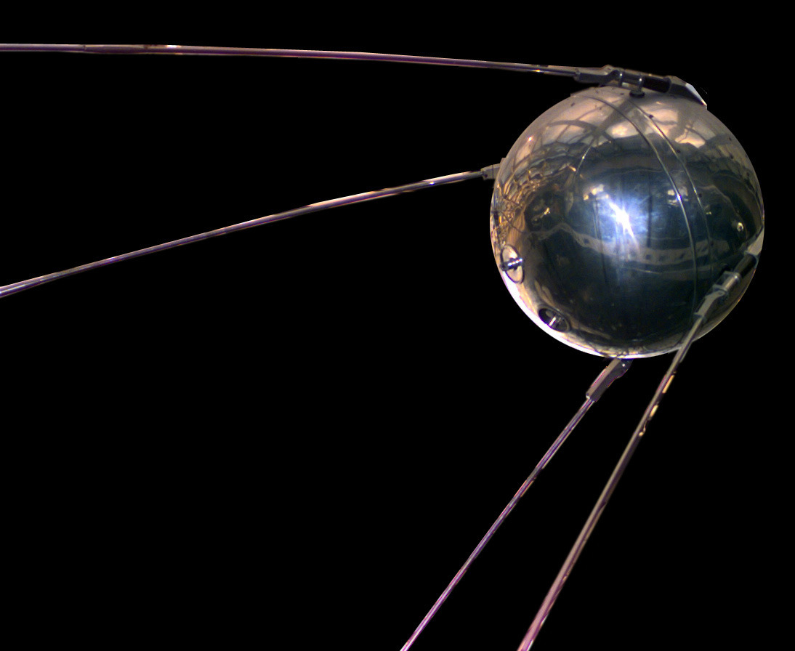

Sputnik 1 was the first artificial Earth satellite. The Soviet Union launched it into an elliptical low Earth orbit on October 4, 1957. It was a 58 cm (23 in) diameter polished metal sphere, with four external radio antennae to broadcast radio pulses. It was visible all around the Earth and its radio pulses were detectable. This surprise success precipitated the AmericanSputnik crisis and triggered the Space Race, a part of the larger Cold War. The launch ushered in new political, military, technological, and scientific developments.
: Source: https://en.wikipedia.org/wiki/Sputnik_1